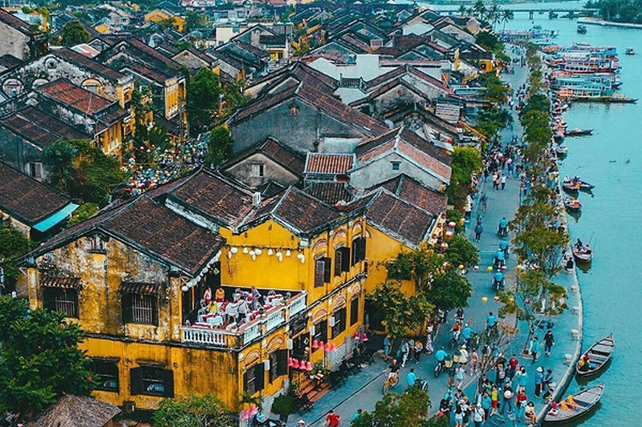

TRUNG TÂM THÀNH PHỐ Hội AN
HỘI AN , january 20, 2024
Hội An là một đô thị cổ thuộc vùng đồng bằng ven biển Quảng Nam, nằm ở vùng hạ lưu sông Thu Bồn. Đây từng là thương cảng lớn và sầm uất bậc nhất khu vực Đông Nam Á. Nhưng ngày nay, mọi người biết đến Hội An không còn là một thương cảng mà là một thành phố du lịch cổ kính và hấp dẫn.